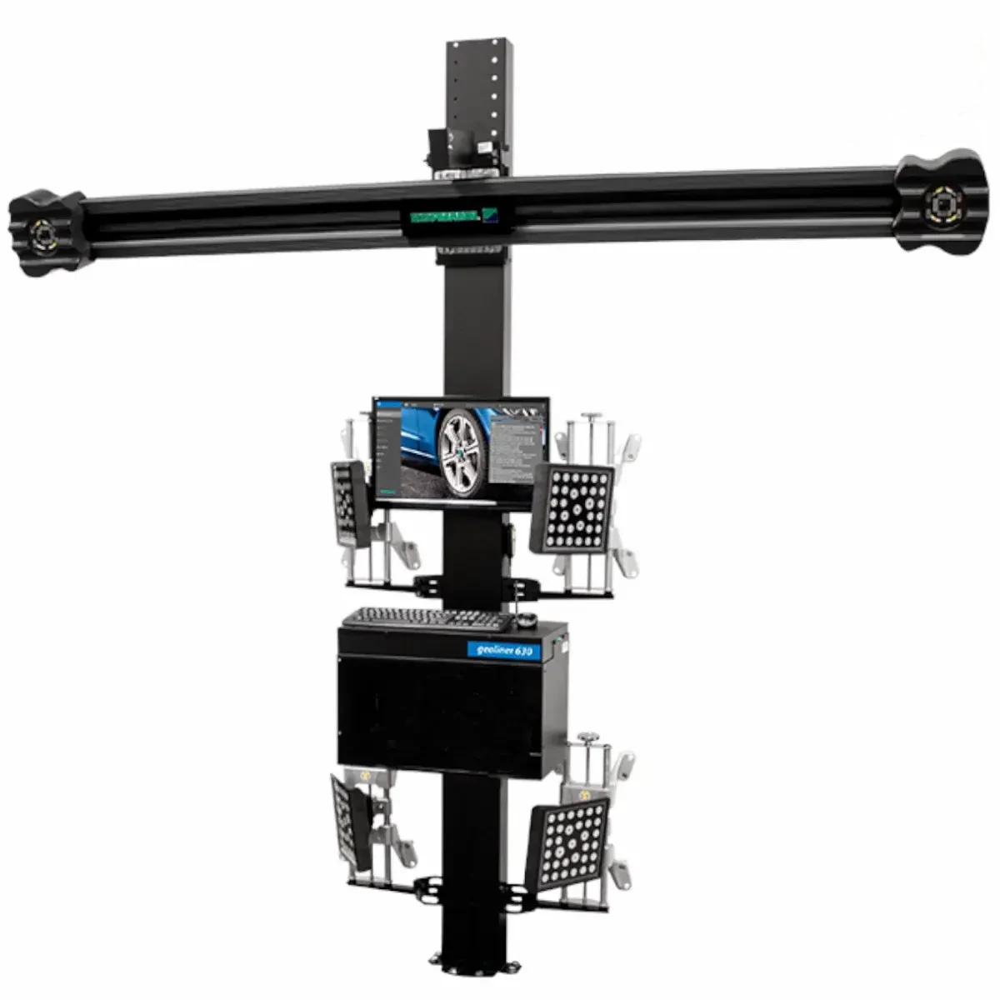

Alineadora 3D Hofmann Geoliner 630
Tecnología de precisión avanzada : Cámaras de alta velocidad y el sistema VODI™ patentado garantizan mediciones exactas y en tiempo real. · Optimización de productividad : Interfaz de usuario inteligente que facilita un flujo de trabajo eficiente, minimizando el tiempo de configuración. · Conectividad y actualizaciones automáticas : Sistema en línea que permite mantener el software actualizado, maximizando el rendimiento en cada uso.
- Capacidad
- 227 kg
- Altura de elevación
- —
- SKU
- 1010259
- Tecnología de precisión avanzada : Cámaras de alta velocidad y el sistema VODI™ patentado garantizan mediciones exactas y en tiempo real.
- Optimización de productividad : Interfaz de usuario inteligente que facilita un flujo de trabajo eficiente, minimizando el tiempo de configuración.
- Conectividad y actualizaciones automáticas : Sistema en línea que permite mantener el software actualizado, maximizando el rendimiento en cada uso.
Alineadora 3D de Ruedas Hofmann Geoliner 630
HofmannAlineador profesional para reparaciones generales que utiliza tecnología de imagen avanzada para proporcionar mediciones precisas y en tiempo real, minimizando los tiempos de configuración y maximizando la productividad.
Características Principales
- Construcción de aluminio fundido
- Interfaz de usuario de última generación con flujo de alineación predictivo e inteligente
- Cámaras de alta velocidad con monitoreo constante de la alineación
- Sistema VODI™ patentado (Indicador Direccional de Orientación del Vehículo)
- Conectividad en línea para actualizaciones automáticas
- Tarjetas pasivas delanteras y traseras sin componentes electrónicos
Especificaciones Técnicas
Dimensiones de Trabajo
- Diámetro de llantas: 13" - 22"
- Ancho de vía: 122 - 244 cm (48" - 96")
- Base rueda: 201 - 457 cm (79" - 180")
- Peso de envío: 227 kg (501 lbs)
- Alimentación: 120/230V 1Ph 50/60Hz
Accesorios Estándar
- Garras para ruedas AC100 con tarjetas 3D
- Fijador del volante
- Depresor del pedal del freno
- Dos cuñas para rueda
- Impresora de inyección de tinta en color
Características del Software
- Acceso rápido al historial del vehículo
- Interfaz gráfica optimizada
- Detección de condiciones ambientales
- Un año de especificaciones incluidas
- Actualizaciones disponibles de 1 a 5 años